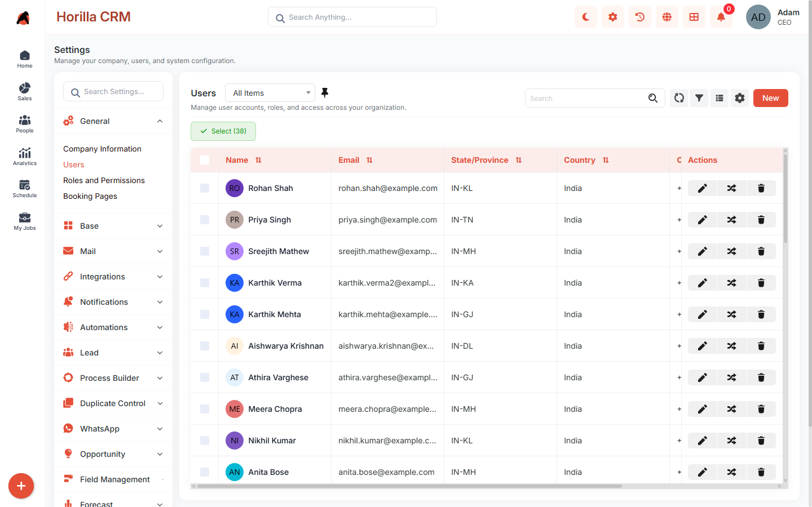
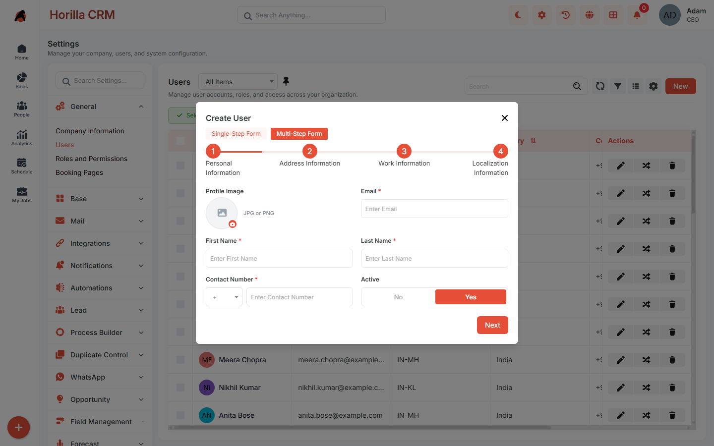
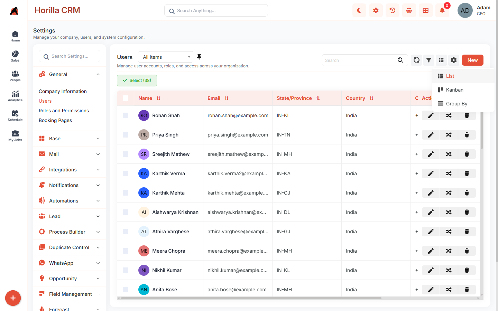
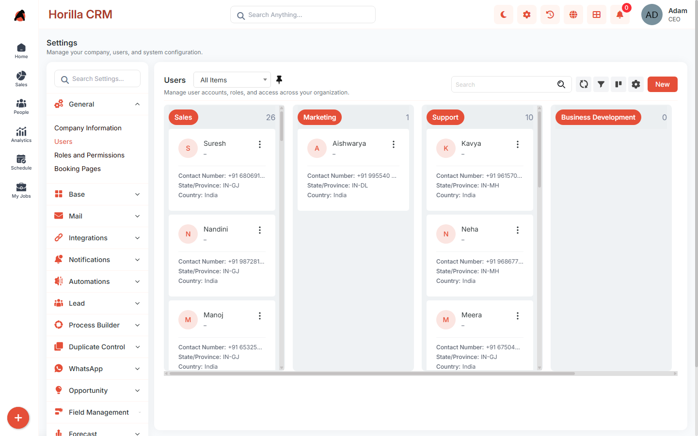
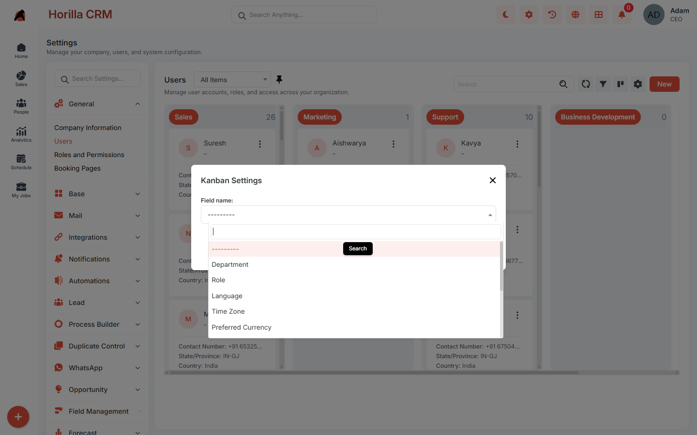
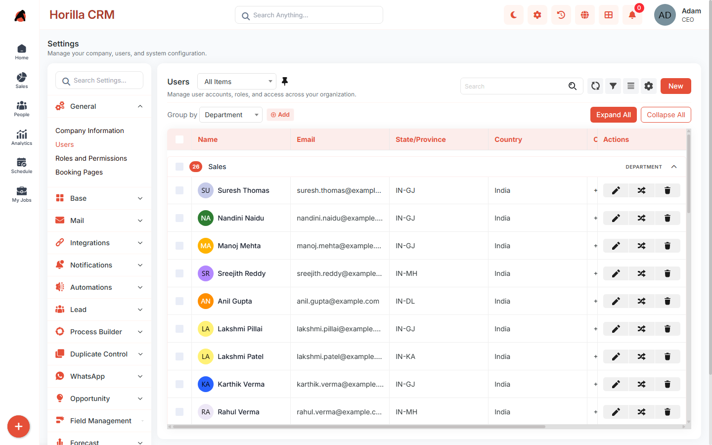
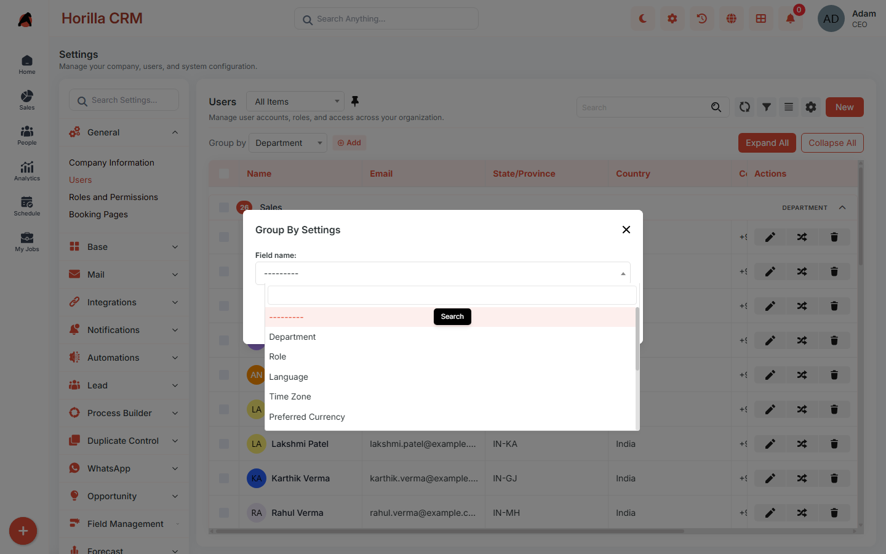
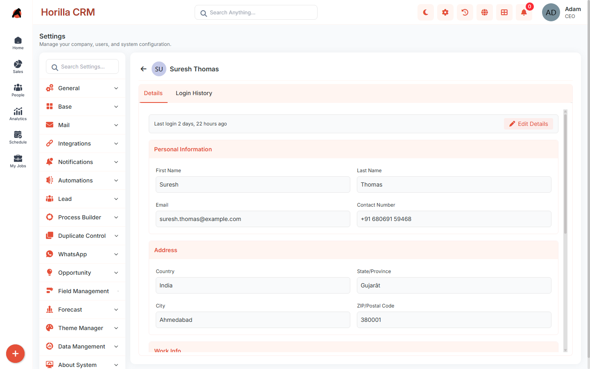

Introduction
The User Management module gives administrators a central place to manage system users, keep an eye on access and uphold security standards. It offers three ways of looking at the same user records: List View, Kanban View and Group By View.
Key Features and Functionalities
1. Users Overview
Purpose: a central dashboard for viewing and managing every user.
Navigation: Settings → Users.
- Shows Name, Email, Role, Contact Number, Country and State/Province.
- A search bar narrows the list quickly.
- Multi-select checkboxes allow bulk selection.
- Each user row carries its own actions: Edit and Delete.

2. User Creation Workflow
Purpose: guided onboarding of new users.
- Click New on the Users page.
- Work through the multi-step wizard, which covers personal, address, work and localization details.
- Use the navigation controls to move between steps; validation checks the accuracy of the data entered.
- Click Save at the end to create and activate the account.

3. View Modes
The module supports three views, switched with the View Selector icon in the top-right corner of the Users page:
- List View (default)
- Kanban View
- Group By View

4. List View (default)
Purpose: present users in a structured table.
- This is the view shown when the Users module is opened.
- Users appear in rows and columns, which can be sorted and scanned quickly.
- Action buttons are available on each record.
5. Kanban View
Purpose: a visual, card-based representation of users.
- Users appear as cards grouped by a chosen field, such as Role or Department.
- Each card shows the Name, Role and contact information.
- Drag-and-drop interaction is supported where enabled.

6. Kanban Settings
Purpose: control how the Kanban view groups data.
- Access: click the Settings icon in the view toolbar and choose Kanban Settings.
- Configuration: select the field to group by, for example Role or Department.

7. Group By View
Purpose: organise users into expandable grouped sections.
- Users are grouped by the selected criteria.
- Each group can be expanded or collapsed.
- Each group shows how many users it contains.
- Within a group the records keep their structured list format.

8. Group By Settings
Purpose: define the grouping logic used by the Group By view.
- Access: click the Settings icon and choose Group By Settings.
- Configuration: choose the field users are grouped by, for example Role or Department.

9. User Profile Management
Purpose: view and edit an individual user's profile in detail.
- Open a profile by clicking a user's name in the list or Kanban view.
- The profile holds personal, address, work and localization details, arranged in sections.

10. Login History Monitoring
Purpose: track login activity for security and compliance.
Open View Login History from the user profile. The history records:
- Browser and OS information
- Login timestamp
- Active/inactive status, shown with green and red indicators
- IP address
- Session status — login and logout events